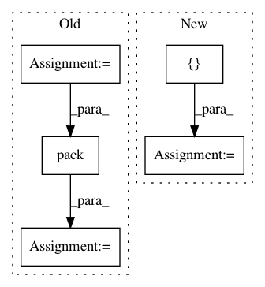

383ea0326ae103b5d5e0b62ed9c3cb18510c5b9e,distributed/comm/tcp.py,TCP,write,#TCP#Any#Any#Any#,229
Before Change
)
try:
nframes = len(frames)
lengths = [nbytes(frame) for frame in frames]
length_bytes = struct.pack(f"Q{nframes}Q", nframes, *lengths)
frames = [length_bytes, *frames]
lengths = [len(length_bytes), *lengths]
if sum(lengths) < 2 ** 17: // 128kiB
// small enough, send in one go
After Change
if frames_nbytes < 2 ** 17: // 128kiB
// small enough, send in one go
frames = [b"".join(frames)]
try:
// trick to enque all frames for writing beforehand
for each_frame in frames:
each_frame_nbytes = nbytes(each_frame)
if each_frame_nbytes:
stream._write_buffer.append(each_frame)
stream._total_write_index += each_frame_nbytes
// start writing frames
stream.write(b"")
except StreamClosedError as e:
self.stream = None
self._closed = True
In pattern: SUPERPATTERN
Frequency: 3
Non-data size: 5
Instances
Project Name: dask/distributed
Commit Name: 383ea0326ae103b5d5e0b62ed9c3cb18510c5b9e
Time: 2021-02-17
Author: jakirkham@gmail.com
File Name: distributed/comm/tcp.py
Class Name: TCP
Method Name: write
Project Name: keras-team/keras
Commit Name: 08014eea360fd8d66b7baab19cdb9335f52c167b
Time: 2016-08-24
Author: francois.chollet@gmail.com
File Name: keras/backend/tensorflow_backend.py
Class Name:
Method Name: repeat
Project Name: GPflow/GPflow
Commit Name: b3dab0288ddcd165e2ba6f95061b5f3d7bf82a1a
Time: 2016-08-10
Author: james.hensman@gmail.com
File Name: GPflow/vgp.py
Class Name: VGP
Method Name: build_predict